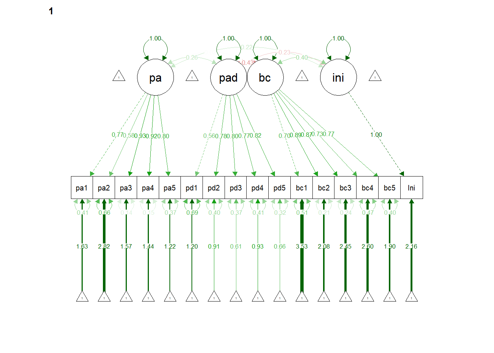
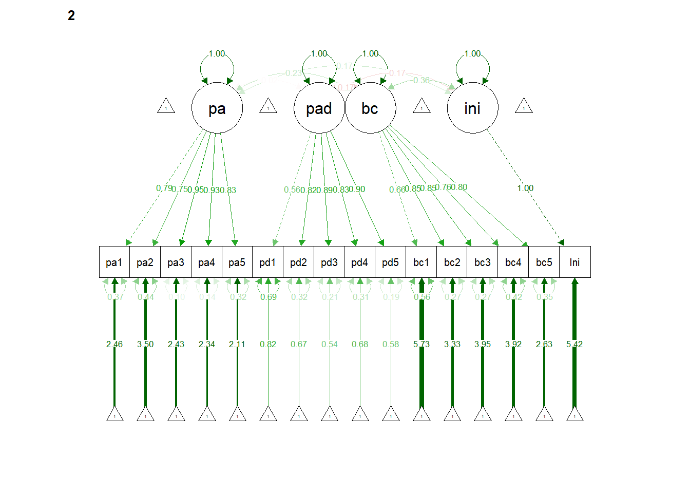

library(here)
library(tidyverse)
library(corrplot)
library(semTools)
library(lavaanPlot)
library(tidySEM)
library(semPlot)CFA Training
Testing Measurement Invariance
We implement a measurement invariance analysis using the Confirmatory Factor Analysis to show that the instrument is valid across problem and non-problem gamblers. The CFA is related to the measurement side of the Structural Equation Modeling framework and is sufficient in proving instrument validity.
Loading in the Dataset
I am loading the recoded dataset that you provided me into R.
We now check for correlations between the items.

We now use the lavaan package to estimate a multi-group CFA by grouping each construct.
gamblingmod <- 'pa =~ pa1 + pa2 +pa3+pa4 + pa5
pad =~ pad1 + pad2 + pad3 + pad4 + pad5
bc =~ bc1 + bc2 + bc3 + bc4 + bc5
cpe =~ cpe1 + cpe2 + cpe3
et =~ et1 + et2 + et3
pfc =~ pfc1 + pfc2 + pfc3
cse =~ cse1 + cse2 + cse3
ini=~ Ini
sus=~ Sus'
CFAfit <- cfa(gamblingmod,data=gambling)
CFAfit |> summary(fit.measures=T)lavaan 0.6.15 ended normally after 85 iterations
Estimator ML
Optimization method NLMINB
Number of model parameters 92
Number of observations 1474
Model Test User Model:
Test statistic 2719.294
Degrees of freedom 343
P-value (Chi-square) 0.000
Model Test Baseline Model:
Test statistic 31036.797
Degrees of freedom 406
P-value 0.000
User Model versus Baseline Model:
Comparative Fit Index (CFI) 0.922
Tucker-Lewis Index (TLI) 0.908
Loglikelihood and Information Criteria:
Loglikelihood user model (H0) -52445.704
Loglikelihood unrestricted model (H1) -51086.057
Akaike (AIC) 105075.408
Bayesian (BIC) 105562.616
Sample-size adjusted Bayesian (SABIC) 105270.360
Root Mean Square Error of Approximation:
RMSEA 0.069
90 Percent confidence interval - lower 0.066
90 Percent confidence interval - upper 0.071
P-value H_0: RMSEA <= 0.050 0.000
P-value H_0: RMSEA >= 0.080 0.000
Standardized Root Mean Square Residual:
SRMR 0.081
Parameter Estimates:
Standard errors Standard
Information Expected
Information saturated (h1) model Structured
Latent Variables:
Estimate Std.Err z-value P(>|z|)
pa =~
pa1 1.000
pa2 0.687 0.024 28.775 0.000
pa3 1.204 0.027 45.048 0.000
pa4 1.232 0.028 44.359 0.000
pa5 1.174 0.031 37.936 0.000
pad =~
pad1 1.000
pad2 1.437 0.066 21.902 0.000
pad3 1.246 0.055 22.559 0.000
pad4 1.595 0.073 21.907 0.000
pad5 1.411 0.062 22.761 0.000
bc =~
bc1 1.000
bc2 1.725 0.053 32.648 0.000
bc3 1.559 0.048 32.493 0.000
bc4 1.372 0.047 29.101 0.000
bc5 1.707 0.057 30.016 0.000
cpe =~
cpe1 1.000
cpe2 0.979 0.036 27.375 0.000
cpe3 0.542 0.027 20.257 0.000
et =~
et1 1.000
et2 0.934 0.018 50.670 0.000
et3 0.936 0.019 48.457 0.000
pfc =~
pfc1 1.000
pfc2 0.995 0.032 30.821 0.000
pfc3 0.972 0.033 29.213 0.000
cse =~
cse1 1.000
cse2 0.992 0.030 32.881 0.000
cse3 0.801 0.034 23.558 0.000
ini =~
Ini 1.000
sus =~
Sus 1.000
Covariances:
Estimate Std.Err z-value P(>|z|)
pa ~~
pad 0.032 0.018 1.753 0.080
bc 0.141 0.018 7.774 0.000
cpe 0.256 0.041 6.239 0.000
et 0.184 0.026 6.952 0.000
pfc 0.152 0.027 5.669 0.000
cse 0.088 0.032 2.779 0.005
ini 0.336 0.033 10.336 0.000
sus 0.719 0.047 15.160 0.000
pad ~~
bc -0.104 0.012 -8.908 0.000
cpe -0.027 0.024 -1.128 0.259
et -0.193 0.018 -10.740 0.000
pfc -0.166 0.018 -9.238 0.000
cse -0.155 0.020 -7.681 0.000
ini -0.135 0.019 -7.011 0.000
sus -0.063 0.025 -2.545 0.011
bc ~~
cpe 0.317 0.026 12.214 0.000
et 0.387 0.021 18.658 0.000
pfc 0.367 0.022 16.568 0.000
cse 0.312 0.022 14.424 0.000
ini 0.290 0.020 14.391 0.000
sus 0.417 0.028 15.073 0.000
cpe ~~
et 0.390 0.036 10.785 0.000
pfc 0.420 0.038 10.938 0.000
cse 0.359 0.043 8.352 0.000
ini 0.358 0.042 8.608 0.000
sus 0.770 0.060 12.923 0.000
et ~~
pfc 0.652 0.034 19.061 0.000
cse 0.509 0.032 16.110 0.000
ini 0.487 0.029 16.537 0.000
sus 0.557 0.038 14.537 0.000
pfc ~~
cse 0.549 0.035 15.587 0.000
ini 0.393 0.030 13.091 0.000
sus 0.518 0.040 12.872 0.000
cse ~~
ini 0.337 0.033 10.144 0.000
sus 0.367 0.044 8.344 0.000
ini ~~
sus 0.858 0.047 18.217 0.000
Variances:
Estimate Std.Err z-value P(>|z|)
.pa1 0.613 0.025 24.622 0.000
.pa2 0.603 0.023 25.952 0.000
.pa3 0.201 0.013 15.301 0.000
.pa4 0.253 0.015 17.066 0.000
.pa5 0.645 0.027 23.808 0.000
.pad1 0.835 0.032 25.945 0.000
.pad2 0.417 0.019 22.033 0.000
.pad3 0.215 0.011 19.606 0.000
.pad4 0.511 0.023 22.019 0.000
.pad5 0.237 0.013 18.388 0.000
.bc1 0.311 0.013 24.697 0.000
.bc2 0.322 0.016 19.968 0.000
.bc3 0.274 0.014 20.246 0.000
.bc4 0.419 0.018 23.702 0.000
.bc5 0.552 0.024 23.089 0.000
.cpe1 0.792 0.058 13.763 0.000
.cpe2 0.594 0.052 11.394 0.000
.cpe3 1.123 0.045 24.932 0.000
.et1 0.255 0.012 21.883 0.000
.et2 0.116 0.007 16.918 0.000
.et3 0.155 0.008 19.379 0.000
.pfc1 0.844 0.034 24.828 0.000
.pfc2 0.164 0.011 14.730 0.000
.pfc3 0.291 0.014 20.421 0.000
.cse1 0.459 0.029 15.603 0.000
.cse2 0.321 0.026 12.240 0.000
.cse3 1.169 0.047 24.706 0.000
.Ini 0.000
.Sus 0.000
pa 1.121 0.061 18.480 0.000
pad 0.376 0.034 11.173 0.000
bc 0.339 0.022 15.633 0.000
cpe 1.670 0.099 16.843 0.000
et 0.765 0.037 20.655 0.000
pfc 0.752 0.052 14.529 0.000
cse 1.061 0.059 18.120 0.000
ini 1.180 0.043 27.148 0.000
sus 2.146 0.079 27.148 0.000Configural Invariance
Let us now see if we have configural invariance between the non-gambling and gambling groups.
cfa.config <- cfa(gamblingmod,data=gambling,group="ProblemG")
cfa.config |> summary(fit.measures=T,standardized=T)lavaan 0.6.15 ended normally after 264 iterations
Estimator ML
Optimization method NLMINB
Number of model parameters 242
Number of observations per group:
0 1410
1 64
Model Test User Model:
Test statistic 3128.651
Degrees of freedom 686
P-value (Chi-square) 0.000
Test statistic for each group:
0 2539.657
1 588.993
Model Test Baseline Model:
Test statistic 30243.009
Degrees of freedom 812
P-value 0.000
User Model versus Baseline Model:
Comparative Fit Index (CFI) 0.917
Tucker-Lewis Index (TLI) 0.902
Loglikelihood and Information Criteria:
Loglikelihood user model (H0) -51998.259
Loglikelihood unrestricted model (H1) -50433.934
Akaike (AIC) 104480.518
Bayesian (BIC) 105762.086
Sample-size adjusted Bayesian (SABIC) 104993.325
Root Mean Square Error of Approximation:
RMSEA 0.070
90 Percent confidence interval - lower 0.067
90 Percent confidence interval - upper 0.072
P-value H_0: RMSEA <= 0.050 0.000
P-value H_0: RMSEA >= 0.080 0.000
Standardized Root Mean Square Residual:
SRMR 0.077
Parameter Estimates:
Standard errors Standard
Information Expected
Information saturated (h1) model Structured
Group 1 [0]:
Latent Variables:
Estimate Std.Err z-value P(>|z|) Std.lv Std.all
pa =~
pa1 1.000 1.062 0.802
pa2 0.693 0.024 28.410 0.000 0.736 0.689
pa3 1.209 0.027 44.231 0.000 1.284 0.947
pa4 1.236 0.028 43.580 0.000 1.312 0.937
pa5 1.179 0.032 37.204 0.000 1.252 0.843
pad =~
pad1 1.000 0.600 0.555
pad2 1.401 0.066 21.208 0.000 0.841 0.798
pad3 1.261 0.057 22.099 0.000 0.757 0.866
pad4 1.577 0.074 21.303 0.000 0.947 0.805
pad5 1.424 0.064 22.186 0.000 0.855 0.873
bc =~
bc1 1.000 0.505 0.686
bc2 1.858 0.064 29.084 0.000 0.939 0.858
bc3 1.665 0.057 29.047 0.000 0.842 0.857
bc4 1.470 0.056 26.317 0.000 0.743 0.766
bc5 1.891 0.070 27.198 0.000 0.956 0.795
cpe =~
cpe1 1.000 1.291 0.822
cpe2 0.997 0.038 26.502 0.000 1.287 0.867
cpe3 0.511 0.026 19.300 0.000 0.659 0.535
et =~
et1 1.000 0.821 0.853
et2 0.915 0.020 46.695 0.000 0.752 0.915
et3 0.936 0.021 45.531 0.000 0.768 0.902
pfc =~
pfc1 1.000 0.832 0.669
pfc2 0.969 0.034 28.394 0.000 0.806 0.895
pfc3 0.938 0.035 26.798 0.000 0.780 0.822
cse =~
cse1 1.000 0.981 0.826
cse2 0.996 0.033 30.583 0.000 0.977 0.869
cse3 0.827 0.037 22.554 0.000 0.811 0.604
ini =~
Ini 1.000 1.046 1.000
sus =~
Sus 1.000 1.450 1.000
Covariances:
Estimate Std.Err z-value P(>|z|) Std.lv Std.all
pa ~~
pad 0.026 0.018 1.448 0.148 0.041 0.041
bc 0.131 0.016 7.971 0.000 0.243 0.243
cpe 0.255 0.042 6.094 0.000 0.186 0.186
et 0.179 0.026 7.017 0.000 0.206 0.206
pfc 0.157 0.027 5.897 0.000 0.178 0.178
cse 0.089 0.031 2.884 0.004 0.086 0.086
ini 0.335 0.032 10.400 0.000 0.302 0.302
sus 0.731 0.048 15.110 0.000 0.475 0.475
pad ~~
bc -0.072 0.010 -7.381 0.000 -0.238 -0.238
cpe -0.000 0.024 -0.008 0.993 -0.000 -0.000
et -0.157 0.016 -9.581 0.000 -0.319 -0.319
pfc -0.136 0.017 -8.090 0.000 -0.273 -0.273
cse -0.124 0.019 -6.566 0.000 -0.211 -0.211
ini -0.105 0.018 -5.756 0.000 -0.167 -0.167
sus -0.037 0.024 -1.522 0.128 -0.043 -0.043
bc ~~
cpe 0.250 0.023 10.967 0.000 0.383 0.383
et 0.303 0.018 17.320 0.000 0.731 0.731
pfc 0.291 0.019 15.284 0.000 0.691 0.691
cse 0.235 0.018 12.936 0.000 0.474 0.474
ini 0.218 0.017 12.782 0.000 0.412 0.412
sus 0.341 0.024 13.957 0.000 0.465 0.465
cpe ~~
et 0.329 0.034 9.590 0.000 0.310 0.310
pfc 0.364 0.037 9.795 0.000 0.339 0.339
cse 0.302 0.041 7.280 0.000 0.238 0.238
ini 0.308 0.041 7.597 0.000 0.228 0.228
sus 0.726 0.060 12.146 0.000 0.388 0.388
et ~~
pfc 0.578 0.032 18.081 0.000 0.846 0.846
cse 0.433 0.029 15.026 0.000 0.538 0.538
ini 0.408 0.027 15.175 0.000 0.475 0.475
sus 0.486 0.036 13.427 0.000 0.408 0.408
pfc ~~
cse 0.483 0.033 14.603 0.000 0.592 0.592
ini 0.327 0.028 11.661 0.000 0.376 0.376
sus 0.457 0.039 11.750 0.000 0.379 0.379
cse ~~
ini 0.263 0.031 8.523 0.000 0.256 0.256
sus 0.289 0.042 6.867 0.000 0.203 0.203
ini ~~
sus 0.801 0.046 17.536 0.000 0.528 0.528
Intercepts:
Estimate Std.Err z-value P(>|z|) Std.lv Std.all
.pa1 2.668 0.035 75.685 0.000 2.668 2.016
.pa2 3.370 0.028 118.535 0.000 3.370 3.157
.pa3 2.662 0.036 73.774 0.000 2.662 1.965
.pa4 2.602 0.037 69.790 0.000 2.602 1.859
.pa5 2.440 0.040 61.688 0.000 2.440 1.643
.pad1 1.011 0.029 35.108 0.000 1.011 0.935
.pad2 0.776 0.028 27.635 0.000 0.776 0.736
.pad3 0.479 0.023 20.560 0.000 0.479 0.548
.pad4 0.880 0.031 28.083 0.000 0.880 0.748
.pad5 0.573 0.026 21.983 0.000 0.573 0.585
.bc1 3.655 0.020 186.332 0.000 3.655 4.962
.bc2 3.111 0.029 106.793 0.000 3.111 2.844
.bc3 3.326 0.026 127.179 0.000 3.326 3.387
.bc4 3.368 0.026 130.418 0.000 3.368 3.473
.bc5 2.865 0.032 89.438 0.000 2.865 2.382
.cpe1 2.146 0.042 51.296 0.000 2.146 1.366
.cpe2 1.952 0.040 49.415 0.000 1.952 1.316
.cpe3 2.958 0.033 90.195 0.000 2.958 2.402
.et1 3.409 0.026 132.971 0.000 3.409 3.541
.et2 3.553 0.022 162.502 0.000 3.553 4.328
.et3 3.528 0.023 155.517 0.000 3.528 4.142
.pfc1 3.131 0.033 94.586 0.000 3.131 2.519
.pfc2 3.422 0.024 142.784 0.000 3.422 3.803
.pfc3 3.391 0.025 134.086 0.000 3.391 3.571
.cse1 3.214 0.032 101.662 0.000 3.214 2.707
.cse2 3.225 0.030 107.661 0.000 3.225 2.867
.cse3 2.900 0.036 81.087 0.000 2.900 2.159
.Ini 3.516 0.028 126.146 0.000 3.516 3.359
.Sus 2.685 0.039 69.539 0.000 2.685 1.852
pa 0.000 0.000 0.000
pad 0.000 0.000 0.000
bc 0.000 0.000 0.000
cpe 0.000 0.000 0.000
et 0.000 0.000 0.000
pfc 0.000 0.000 0.000
cse 0.000 0.000 0.000
ini 0.000 0.000 0.000
sus 0.000 0.000 0.000
Variances:
Estimate Std.Err z-value P(>|z|) Std.lv Std.all
.pa1 0.625 0.026 24.264 0.000 0.625 0.357
.pa2 0.598 0.024 25.417 0.000 0.598 0.525
.pa3 0.188 0.013 14.663 0.000 0.188 0.103
.pa4 0.238 0.014 16.463 0.000 0.238 0.121
.pa5 0.639 0.027 23.409 0.000 0.639 0.290
.pad1 0.810 0.032 25.404 0.000 0.810 0.692
.pad2 0.404 0.018 21.920 0.000 0.404 0.363
.pad3 0.191 0.010 18.496 0.000 0.191 0.250
.pad4 0.488 0.023 21.689 0.000 0.488 0.353
.pad5 0.227 0.013 17.911 0.000 0.227 0.237
.bc1 0.287 0.012 24.368 0.000 0.287 0.529
.bc2 0.315 0.016 19.557 0.000 0.315 0.263
.bc3 0.256 0.013 19.637 0.000 0.256 0.265
.bc4 0.388 0.017 23.044 0.000 0.388 0.413
.bc5 0.533 0.024 22.304 0.000 0.533 0.368
.cpe1 0.802 0.060 13.383 0.000 0.802 0.325
.cpe2 0.545 0.055 9.882 0.000 0.545 0.248
.cpe3 1.082 0.044 24.625 0.000 1.082 0.713
.et1 0.253 0.012 21.590 0.000 0.253 0.273
.et2 0.109 0.007 16.751 0.000 0.109 0.162
.et3 0.135 0.007 18.238 0.000 0.135 0.187
.pfc1 0.854 0.035 24.206 0.000 0.854 0.552
.pfc2 0.161 0.011 14.339 0.000 0.161 0.199
.pfc3 0.293 0.014 20.207 0.000 0.293 0.325
.cse1 0.448 0.029 15.299 0.000 0.448 0.318
.cse2 0.310 0.026 11.828 0.000 0.310 0.245
.cse3 1.146 0.048 24.034 0.000 1.146 0.636
.Ini 0.000 0.000 0.000
.Sus 0.000 0.000 0.000
pa 1.127 0.063 18.022 0.000 1.000 1.000
pad 0.361 0.033 10.879 0.000 1.000 1.000
bc 0.256 0.018 14.230 0.000 1.000 1.000
cpe 1.666 0.102 16.334 0.000 1.000 1.000
et 0.674 0.034 19.669 0.000 1.000 1.000
pfc 0.692 0.051 13.661 0.000 1.000 1.000
cse 0.962 0.056 17.258 0.000 1.000 1.000
ini 1.095 0.041 26.552 0.000 1.000 1.000
sus 2.102 0.079 26.552 0.000 1.000 1.000
Group 2 [1]:
Latent Variables:
Estimate Std.Err z-value P(>|z|) Std.lv Std.all
pa =~
pa1 1.000 0.946 0.834
pa2 0.552 0.126 4.368 0.000 0.522 0.531
pa3 1.144 0.141 8.127 0.000 1.083 0.859
pa4 1.189 0.151 7.857 0.000 1.125 0.838
pa5 1.064 0.157 6.794 0.000 1.007 0.755
pad =~
pad1 1.000 0.354 0.286
pad2 2.537 1.172 2.165 0.030 0.898 0.722
pad3 2.262 1.043 2.168 0.030 0.801 0.728
pad4 2.196 1.059 2.074 0.038 0.778 0.575
pad5 2.805 1.266 2.215 0.027 0.993 0.920
bc =~
bc1 1.000 0.876 0.726
bc2 1.281 0.189 6.765 0.000 1.122 0.872
bc3 1.183 0.193 6.113 0.000 1.035 0.786
bc4 0.851 0.193 4.409 0.000 0.745 0.571
bc5 1.030 0.184 5.608 0.000 0.902 0.723
cpe =~
cpe1 1.000 0.570 0.444
cpe2 0.884 0.357 2.478 0.013 0.504 0.386
cpe3 1.871 0.514 3.642 0.000 1.067 0.837
et =~
et1 1.000 1.121 0.910
et2 0.956 0.085 11.236 0.000 1.072 0.909
et3 0.890 0.106 8.428 0.000 0.997 0.791
pfc =~
pfc1 1.000 1.076 0.830
pfc2 1.044 0.109 9.573 0.000 1.124 0.919
pfc3 1.115 0.115 9.666 0.000 1.199 0.924
cse =~
cse1 1.000 1.392 0.886
cse2 0.857 0.137 6.250 0.000 1.193 0.827
cse3 0.412 0.127 3.247 0.001 0.574 0.421
ini =~
Ini 1.000 1.378 1.000
sus =~
Sus 1.000 1.467 1.000
Covariances:
Estimate Std.Err z-value P(>|z|) Std.lv Std.all
pa ~~
pad 0.072 0.058 1.254 0.210 0.215 0.215
bc 0.288 0.128 2.248 0.025 0.348 0.348
cpe 0.138 0.092 1.496 0.135 0.255 0.255
et 0.414 0.159 2.602 0.009 0.391 0.391
pfc 0.170 0.142 1.196 0.232 0.167 0.167
cse 0.152 0.189 0.803 0.422 0.115 0.115
ini 0.382 0.181 2.115 0.034 0.293 0.293
sus 0.438 0.194 2.258 0.024 0.315 0.315
pad ~~
bc -0.040 0.048 -0.842 0.400 -0.129 -0.129
cpe -0.043 0.038 -1.110 0.267 -0.211 -0.211
et -0.105 0.073 -1.435 0.151 -0.265 -0.265
pfc -0.063 0.060 -1.045 0.296 -0.164 -0.164
cse -0.058 0.075 -0.775 0.439 -0.119 -0.119
ini -0.079 0.074 -1.064 0.287 -0.161 -0.161
sus 0.014 0.069 0.202 0.840 0.027 0.027
bc ~~
cpe 0.437 0.153 2.854 0.004 0.874 0.874
et 0.679 0.182 3.736 0.000 0.692 0.692
pfc 0.721 0.188 3.835 0.000 0.765 0.765
cse 0.682 0.214 3.181 0.001 0.560 0.560
ini 0.650 0.195 3.328 0.001 0.538 0.538
sus 0.851 0.224 3.794 0.000 0.662 0.662
cpe ~~
et 0.499 0.171 2.911 0.004 0.780 0.780
pfc 0.532 0.180 2.955 0.003 0.868 0.868
cse 0.357 0.161 2.213 0.027 0.450 0.450
ini 0.535 0.188 2.843 0.004 0.680 0.680
sus 0.616 0.211 2.923 0.003 0.736 0.736
et ~~
pfc 0.965 0.222 4.354 0.000 0.801 0.801
cse 0.564 0.235 2.403 0.016 0.362 0.362
ini 0.887 0.234 3.793 0.000 0.574 0.574
sus 0.931 0.248 3.757 0.000 0.566 0.566
pfc ~~
cse 0.750 0.242 3.102 0.002 0.500 0.500
ini 0.660 0.216 3.059 0.002 0.445 0.445
sus 0.838 0.239 3.500 0.000 0.531 0.531
cse ~~
ini 0.676 0.276 2.454 0.014 0.352 0.352
sus 0.951 0.306 3.111 0.002 0.466 0.466
ini ~~
sus 1.054 0.285 3.697 0.000 0.521 0.521
Intercepts:
Estimate Std.Err z-value P(>|z|) Std.lv Std.all
.pa1 2.844 0.142 20.043 0.000 2.844 2.505
.pa2 3.453 0.123 28.098 0.000 3.453 3.512
.pa3 2.812 0.158 17.844 0.000 2.812 2.230
.pa4 2.594 0.168 15.450 0.000 2.594 1.931
.pa5 2.188 0.167 13.126 0.000 2.188 1.641
.pad1 1.797 0.155 11.595 0.000 1.797 1.449
.pad2 2.016 0.155 12.966 0.000 2.016 1.621
.pad3 1.094 0.138 7.954 0.000 1.094 0.994
.pad4 2.125 0.169 12.573 0.000 2.125 1.572
.pad5 1.266 0.135 9.385 0.000 1.266 1.173
.bc1 2.375 0.151 15.761 0.000 2.375 1.970
.bc2 1.469 0.161 9.133 0.000 1.469 1.142
.bc3 1.781 0.165 10.823 0.000 1.781 1.353
.bc4 1.953 0.163 11.980 0.000 1.953 1.498
.bc5 1.422 0.156 9.118 0.000 1.422 1.140
.cpe1 1.297 0.160 8.086 0.000 1.297 1.011
.cpe2 1.375 0.163 8.429 0.000 1.375 1.054
.cpe3 1.469 0.159 9.220 0.000 1.469 1.153
.et1 2.125 0.154 13.809 0.000 2.125 1.726
.et2 2.172 0.147 14.725 0.000 2.172 1.841
.et3 2.312 0.158 14.672 0.000 2.312 1.834
.pfc1 2.094 0.162 12.928 0.000 2.094 1.616
.pfc2 2.141 0.153 14.002 0.000 2.141 1.750
.pfc3 2.141 0.162 13.199 0.000 2.141 1.650
.cse1 1.969 0.196 10.026 0.000 1.969 1.253
.cse2 1.984 0.180 11.013 0.000 1.984 1.377
.cse3 1.875 0.170 11.000 0.000 1.875 1.375
.Ini 2.422 0.172 14.056 0.000 2.422 1.757
.Sus 1.688 0.183 9.202 0.000 1.688 1.150
pa 0.000 0.000 0.000
pad 0.000 0.000 0.000
bc 0.000 0.000 0.000
cpe 0.000 0.000 0.000
et 0.000 0.000 0.000
pfc 0.000 0.000 0.000
cse 0.000 0.000 0.000
ini 0.000 0.000 0.000
sus 0.000 0.000 0.000
Variances:
Estimate Std.Err z-value P(>|z|) Std.lv Std.all
.pa1 0.393 0.092 4.261 0.000 0.393 0.305
.pa2 0.694 0.128 5.424 0.000 0.694 0.718
.pa3 0.417 0.106 3.936 0.000 0.417 0.263
.pa4 0.538 0.128 4.217 0.000 0.538 0.298
.pa5 0.764 0.157 4.859 0.000 0.764 0.430
.pad1 1.412 0.252 5.598 0.000 1.412 0.918
.pad2 0.740 0.155 4.767 0.000 0.740 0.478
.pad3 0.569 0.120 4.731 0.000 0.569 0.470
.pad4 1.223 0.231 5.299 0.000 1.223 0.669
.pad5 0.178 0.095 1.868 0.062 0.178 0.153
.bc1 0.686 0.137 5.026 0.000 0.686 0.472
.bc2 0.397 0.104 3.830 0.000 0.397 0.240
.bc3 0.661 0.140 4.733 0.000 0.661 0.381
.bc4 1.145 0.213 5.386 0.000 1.145 0.673
.bc5 0.743 0.147 5.039 0.000 0.743 0.478
.cpe1 1.321 0.239 5.522 0.000 1.321 0.802
.cpe2 1.449 0.260 5.570 0.000 1.449 0.851
.cpe3 0.486 0.179 2.720 0.007 0.486 0.299
.et1 0.259 0.072 3.583 0.000 0.259 0.171
.et2 0.243 0.067 3.630 0.000 0.243 0.174
.et3 0.596 0.120 4.975 0.000 0.596 0.375
.pfc1 0.521 0.106 4.892 0.000 0.521 0.310
.pfc2 0.233 0.063 3.709 0.000 0.233 0.156
.pfc3 0.245 0.069 3.552 0.000 0.245 0.145
.cse1 0.529 0.262 2.018 0.044 0.529 0.214
.cse2 0.655 0.215 3.051 0.002 0.655 0.315
.cse3 1.530 0.280 5.468 0.000 1.530 0.823
.Ini 0.000 0.000 0.000
.Sus 0.000 0.000 0.000
pa 0.896 0.225 3.977 0.000 1.000 1.000
pad 0.125 0.113 1.105 0.269 1.000 1.000
bc 0.767 0.235 3.264 0.001 1.000 1.000
cpe 0.325 0.181 1.794 0.073 1.000 1.000
et 1.256 0.270 4.656 0.000 1.000 1.000
pfc 1.158 0.287 4.032 0.000 1.000 1.000
cse 1.938 0.492 3.944 0.000 1.000 1.000
ini 1.900 0.336 5.657 0.000 1.000 1.000
sus 2.152 0.381 5.657 0.000 1.000 1.000cfasem <- sem(gamblingmod,data=gambling,group="ProblemG")
lavaanPlot(model=cfasem,coefs = TRUE, stand = TRUE, sig = 0.05,covs=T) -> lp
save_png(lp,"sem.png")
semPaths(cfasem,"std",layout="tree")

The results show that the fit is good between the groups. CFI and TLI are close to 0.95, RMSEA is close to 0.06, and SRMR is close to 0.8. We can conclude that the two groups have the same factor structure.
Metric Invariance
Now we are testing metric invariance, which sets the loadings to be equal. We then compare the fit between the configural and metric assumptions.
cfa.metric <- cfa(gamblingmod,data=gambling,group="ProblemG",group.equal="loadings")
compareFit(cfa.config,cfa.metric) |> summary()################### Nested Model Comparison #########################
Chi-Squared Difference Test
Df AIC BIC Chisq Chisq diff RMSEA Df diff Pr(>Chisq)
cfa.config 686 104481 105762 3128.7
cfa.metric 706 104496 105671 3183.7 55.089 0.04879 20 3.983e-05 ***
---
Signif. codes: 0 '***' 0.001 '**' 0.01 '*' 0.05 '.' 0.1 ' ' 1
####################### Model Fit Indices ###########################
chisq df pvalue rmsea cfi tli srmr aic bic
cfa.config 3128.651† 686 .000 .070 .917† .902 .077† 104480.518† 105762.086
cfa.metric 3183.739 706 .000 .069† .916 .903† .078 104495.606 105671.260†
################## Differences in Fit Indices #######################
df rmsea cfi tli srmr aic bic
cfa.metric - cfa.config 20 -0.001 -0.001 0.001 0.001 15.089 -90.826Results show that the chi-square test is significant, which means that the metric invariance is not satisfied. This means that even if the groups have the same factor structures, the factor loadings are different across groups. This is understandable based on the nature of grouping (problem vs non-problem gamblers). There must be different sense of importance in their attitude towards gambling.